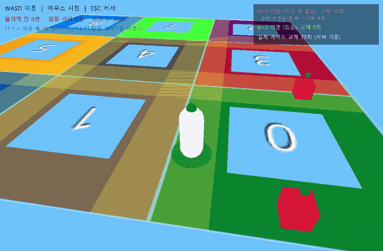
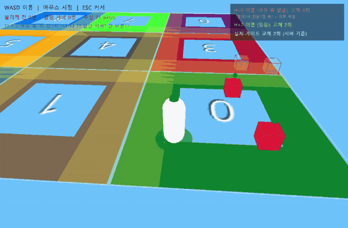

🎥 실제 작동 — 3D 뷰어 (STEP 4)
① 문제 — 이주 폭풍 (게이트 H=0, 여유 폭 없음)

경계선에 딱 걸쳐 좌우로 조금만 흔들어도, 담당 서버(머리 위 점 색)가 두 존 색 사이에서 미친듯이 깜빡인다. 우상단 '실제 게이트 교체' 카운터가 폭발 — 매 프레임 백엔드가 연결을 끊고 다시 붙는 이주 폭풍이다. 실제 서버라면 이 순간 상태 이전·재연결 비용이 초당 수십 번 터진다.
❌ 문제 (H=0)
· 경계는 기하학적 선(x=10) 하나뿐 → 그 선 위에서 위치가 10.0 ↔ 9.99로만 떨려도 zone0 ↔ zone1 판정이 매번 뒤집힌다
· 판정이 뒤집힐 때마다 게이트가 백엔드 교체(끊고 재연결) → 초당 수십 회 = 폭풍
② 해결 — 히스테리시스 (게이트 H=2, 노란 여유 폭)

경계에 노란 반투명 띠(여유 폭 ±2)가 생겼다. ①과 똑같이 흔들어도 이번엔 담당 서버(머리 위 점 색)가 안 깜빡인다 — '물리적 칸'은 바뀌어도 '담당 서버'는 그대로. 우상단에서 🔴 'H=0이면' 가상 카운터만 치솟고, ⚪ '실제 게이트 교체'는 가만히 있는 게 핵심(같은 움직임, 극명한 차이). 띠를 확실히 넘어가는 순간에만 초록 '이주!' 배너가 딱 한 번 뜬다.
✅ 해결 (H=2)
· 넘는 기준(x≥12)과 되돌아오는 기준(x≤8)을 벌려서(dead band) 경계선 위 진동을 흡수
· 발밑 원반 = 물리적 칸 색 / 머리 위 점 = 담당 서버 색 → 둘이 다르면 "여유 폭 안"(넘었지만 아직 이주 전)
· 실측: 존0↔존1 한 왕복에 교체 딱 2회(x=13에서 이주, x=5에서 복귀) — 폭풍이 잠잠해졌다
❌ 아직 안 되는 것 (다음 단계에서)
· 옆 칸을 공격할 수는 없다(고스트는 읽기전용) → STEP 5 위치 투명 라우팅
Part 1. 이주 폭풍 — 경계에서 떨면 서버가 미친듯이 갈아탄다
게이트가 이미 크로싱을 매끄럽게 하는데, 뭐가 문제지?
클라가 경계에 딱 걸쳐 왔다갔다 하면, 매 순간 담당 서버가 바뀐다. 그때마다 게이트가 백엔드를 갈아끼우니, 짧은 시간에 교체가 수십 번 — 이주 폭풍이다. 낭비도 크고 불안정하다.
클라가 경계(x=10)에서 9↔11 진동:
H=0 (히스테리시스 없음): 교체 1,2,3,4,5,6,7회 ... 🌀 폭풍
H=2 (있음): 교체 0회 ✅ 잠잠
Part 2. 히스테리시스 — 넘는 기준과 되돌아오는 기준을 벌린다
어떻게 잡지?
'넘어가는 기준'과 '되돌아오는 기준'을 다르게 둔다. 경계가 x=10이면, 오른쪽으로 넘을 땐 x≥12여야, 왼쪽으로 돌아올 땐 x≤8이어야 교체. 그 사이 [8,12]는 아무것도 안 바꾸는 여유 구간(dead band)이라, 살짝 떠는 정도론 안 갈아탄다.
// 게이트: 경계를 H만큼 확실히 넘었을 때만 새 칸으로. 아니면 현재 칸 유지.
int NextZone(int cur, float x, float y) {
int nz = ZoneOf(x, y);
if (nz == cur) return cur;
if (nc == cc + 1) return x >= (cc + 1) * 10 + H ? nz : cur;
if (nc == cc - 1) return x <= cc * 10 - H ? nz : cur;
...
}
⚠️ 정직한 범위 표시
여기서 구현한 건 이주의 안정성(폭풍 방지) 측면이다. 크로싱의 '끊김 없음'은 STEP 2 게이트가 이미 준다.
이주의 더 깊은 부분 — 원 서버가 가진 액터의 전체 상태를 새 서버로 스냅샷으로 넘기고, 전환 중 도착한 메시지를 버퍼링하는 것 — 은 이 데모에선 단순화됐다(게이트가 백엔드만 재연결). 프로덕션이면 상태 핸드오프 + 전환 버퍼가 추가로 필요하다. (다음에 붙일 지점으로 남김.)
★ 이야기로 (A→Z)
네트워크를 몰라도 읽히게.
STEP 2에서 게이트를 만든 뒤로, 클라는 칸을 넘어도 재접속 없이 매끄럽게 넘어갔습니다. 그런데 한 가지가 걸렸습니다. 클라가 경계에 딱 걸쳐 왔다갔다 하면 어떻게 될까요? 위치가 x=9(왼쪽 칸)와 x=11(오른쪽 칸)을 오가면, 게이트가 매번 담당 서버를 바꿉니다. 짧은 시간에 서버 교체가 폭발하는 겁니다.
이주 폭풍 — 경계에서 미세하게 떨 때 담당 서버가 딸깍딸깍 반복해서 바뀌는 현상. 실제 유저는 경계를 스치듯 지날 때가 많아, 이걸 안 잡으면 서버가 늘 불안정합니다.
해결책은 온도조절기에서 빌려왔습니다. 온도조절기는 26도에 에어컨을 켜고 24도에 끕니다. 켜는 기준과 끄는 기준을 벌려두면 25도 근처에서 딸깍대지 않죠.
히스테리시스 — '넘어가는 기준'과 '되돌아오는 기준'에 여유 폭을 둡니다. 경계를 확실히 넘었을 때(H만큼)만 서버를 바꾸고, 그 안쪽 여유 구간에선 지금 서버를 유지합니다. 진동을 흡수하는 거죠.
실제로 돌려보니 극명했습니다. 히스테리시스를 끄면(H=0) 같은 진동에 서버가 7번 갈아탔고, 켜면(H=2) 0번이었습니다. 움직임은 똑같은데 결과가 완전히 달랐습니다.
다만 솔직히 말하면, 이건 이주의 '안정성' 부분만 다룬 겁니다. 경계를 매끄럽게 넘는 것 자체는 게이트가 이미 해줬고요. 진짜 심리스 이주의 더 깊은 부분 — 원래 서버가 들고 있던 그 캐릭터의 전체 상태(체력·인벤 등)를 새 서버로 스냅샷으로 넘기고, 넘기는 그 찰나에 도착한 패킷을 버퍼링했다가 이어붙이는 것 — 은 이 데모에선 단순화했습니다. 여기서 배운 것은, '분산은 나누는 것보다, 나눈 것들 사이의 전환을 안정적으로 만드는 게 더 어렵다'는 점입니다.